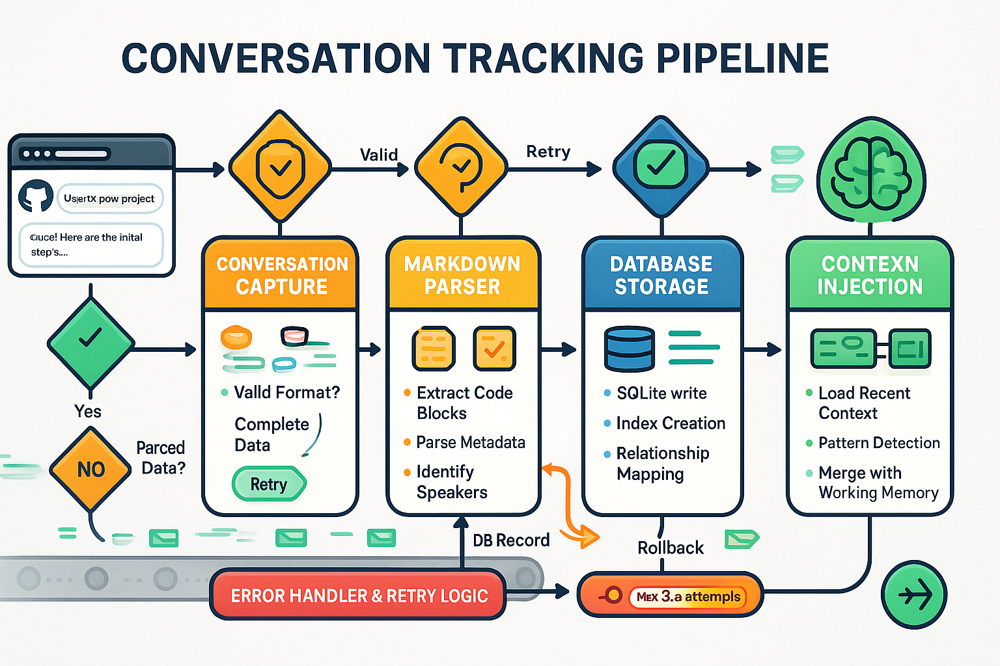
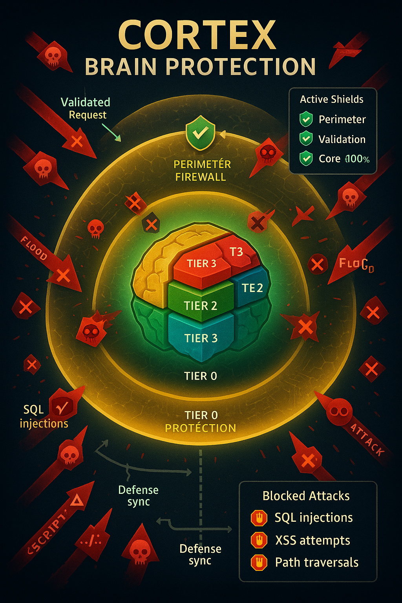
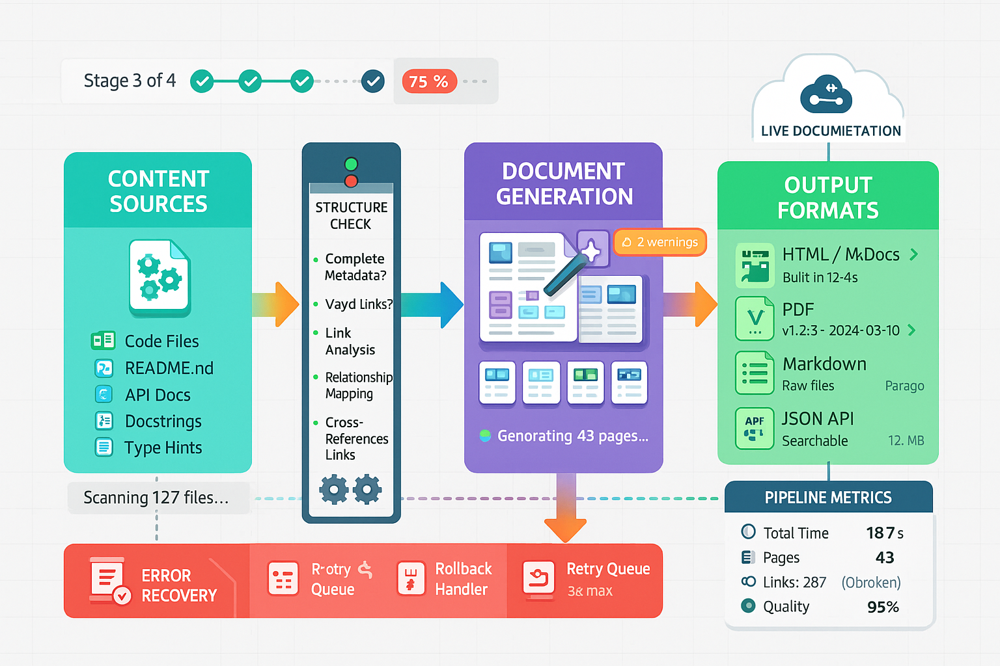
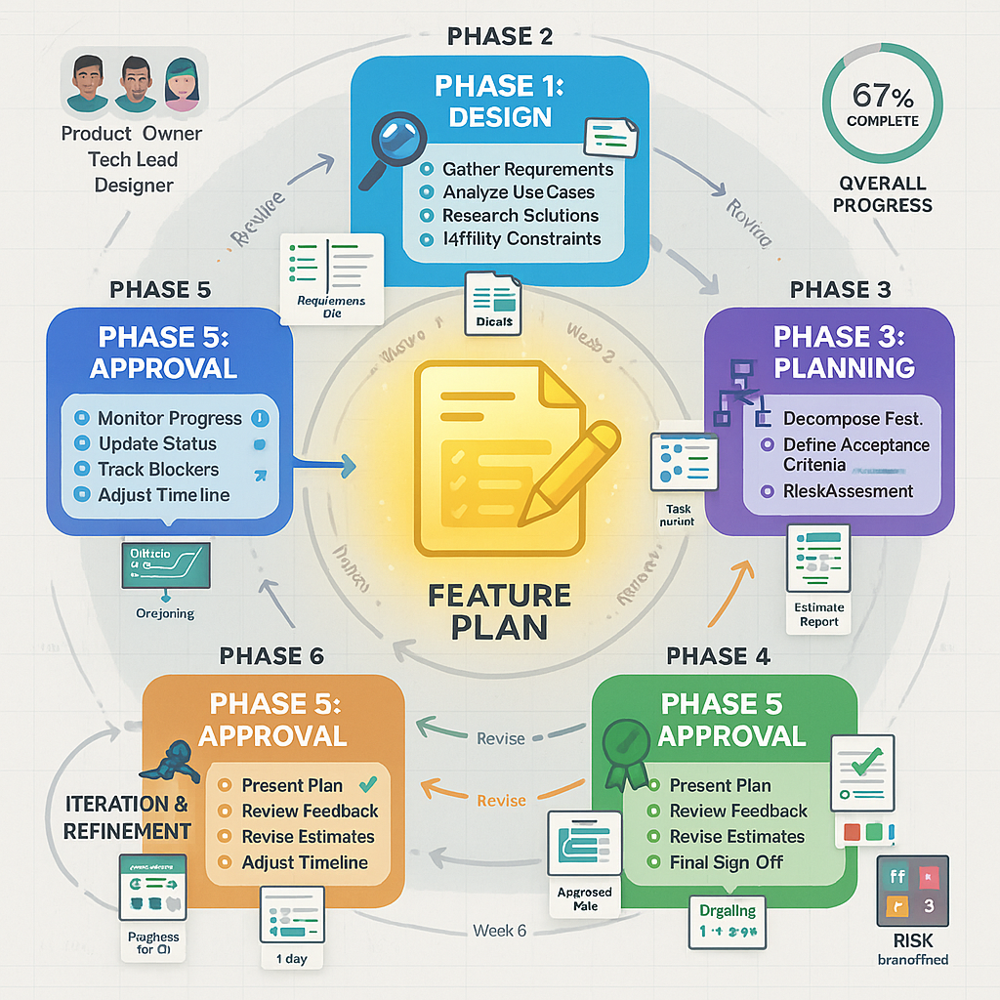
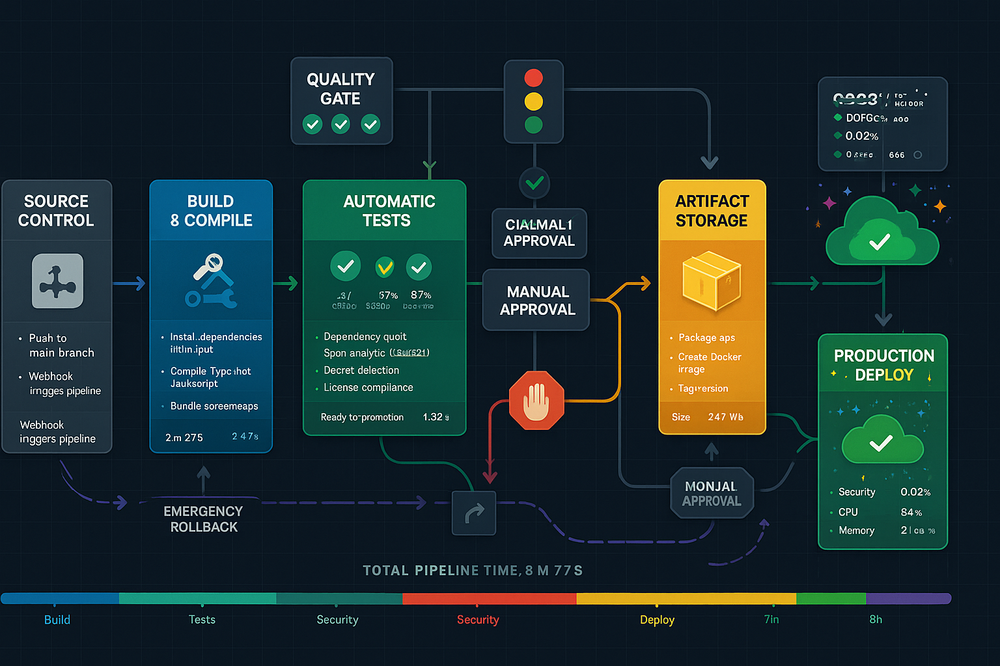
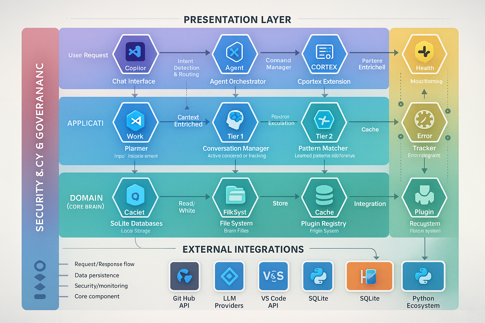

Entry Point Modules (EPM)¶
Entry Point Modules (EPM) are CORTEX's orchestration layer that coordinates complex multi-step operations through structured workflows. EPM provides a unified interface for executing enterprise-grade operations while maintaining consistency, observability, and error handling.
Overview¶
The EPM architecture enables CORTEX to:
- Orchestrate Complex Workflows - Multi-phase operations with dependency management
- Ensure Consistency - Standardized execution patterns across all operations
- Enable Observability - Real-time progress tracking and telemetry
- Handle Errors Gracefully - Automatic retry, rollback, and recovery mechanisms
- Scale Operations - Parallel execution and resource optimization
Architecture¶
Tier System¶
CORTEX operates on a 4-tier cognitive architecture that separates concerns and enables efficient data flow:

Tier 0: Entry Point Layer¶
- Request routing and validation
- Brain protection security gateway
- Operation orchestration
- Input/output handling
Tier 1: Working Memory Layer¶
- Active conversation context
- Session state management
- Agent coordination
- Real-time processing
Tier 2: Knowledge Graph Layer¶
- Relationship networks
- Pattern storage and retrieval
- Entity indexing
- Semantic search
Tier 3: Long-term Storage Layer¶
- Conversation vault (persistent storage)
- Historical data archives
- Pattern libraries
- Performance metrics
Agent Coordination¶
EPM coordinates multiple specialized agents to accomplish complex tasks:

Core Agents¶
- Intent Detector - Analyzes user requests to determine intent
- Pattern Matcher - Finds relevant past solutions from knowledge graph
- Executor - Implements solutions with code generation
- Tester - Validates implementations with automated tests
- Documenter - Creates comprehensive documentation
- Health Validator - Ensures system integrity and quality
- Architect - Designs system structure and integration points
- Security Auditor - Validates security compliance (OWASP)
- Work Planner - Breaks down features into implementable tasks
- Context Manager - Maintains conversation continuity
Coordination via Corpus Callosum¶
The Corpus Callosum acts as the communication bus between agents, enabling:
- Message passing between specialized agents
- State synchronization across agent interactions
- Priority-based task scheduling
- Conflict resolution for competing operations
Information Flow¶
Data flows through CORTEX tiers with intelligent caching and context management:

Request Flow¶
- User request enters Tier 0 (Entry Point)
- Brain Protection validates and sanitizes input
- Intent Detector analyzes and routes request
- Pattern Matcher searches Tier 2 for relevant context
- Agents execute in Tier 1 working memory
- Results persist to Tier 3 if valuable
- Response returns through Tier 0 to user
Context Injection¶
- Automatic retrieval of relevant past conversations
- File-based context from open editors
- Pattern-based suggestions from knowledge graph
- Real-time agent state updates
Core Workflows¶
Conversation Tracking¶
CORTEX maintains conversation continuity across sessions:

Features¶
- Automatic Capture - Ambient daemon records GitHub Copilot conversations
- Manual Import - Direct import from conversation files
- Context Injection - Relevant past conversations auto-injected
- Quality Scoring - Relevance scoring (0.0-1.0) for context ranking
- Privacy-First - All data stored locally (no cloud sync)
Commands¶
capture conversation #file:conversation.md # Import conversation
show context # View active context
forget about authentication # Remove specific context
clear memory # Reset all context
Plugin System¶
Extensible plugin architecture for custom functionality:

Plugin Types¶
- Crawler Plugins - Scan codebases, APIs, databases
- Generator Plugins - Create diagrams, documentation, reports
- Analyzer Plugins - Code analysis, security audits, performance profiling
- Integration Plugins - Connect to external tools (Git, Azure DevOps, Jira)
Plugin Lifecycle¶
- Discovery - Automatic detection in
src/plugins/directory - Registration - Plugin registers commands with PluginCommandRegistry
- Initialization - Plugin validates dependencies and configuration
- Execution - Plugin executes on command invocation
- Cleanup - Plugin releases resources on shutdown
Brain Protection¶
Multi-layered security protecting CORTEX cognitive functions:

Protection Layers¶
Layer 1: SKULL Rules - Critical development principles
- Test Before Claim (SKULL-001)
- Integration Verification (SKULL-002)
- Avoid Premature Optimization (SKULL-003)
- Backward Compatibility (SKULL-004)
- Security-First (SKULL-005)
- Documentation Required (SKULL-006)
- Complete Test Coverage (SKULL-007)
Layer 2: File Protection - Guards critical files from modification
- Brain files (tier databases, knowledge graphs)
- Configuration files (cortex.config.json)
- Core architecture files (brain_protector.py)
- Test files (test_brain_protector.py)
Layer 3: Operation Validation - Ensures safe operation execution
- Pre-execution checks
- Dangerous operation warnings
- Rollback capabilities
- Audit logging
Layer 4: Context Isolation - Prevents cross-workspace contamination
- Namespace protection (workspace., cortex., user.*)
- Pattern isolation by source
- Permission-based access control
Operation Pipeline¶
Standardized execution pipeline for all EPM operations:

Pipeline Stages¶
1. Request Intake
- Parse user command
- Extract parameters
- Validate input format
2. Intent Detection
- Analyze request semantics
- Determine operation type (PLAN, IMPLEMENT, TEST, VALIDATE, etc.)
- Route to appropriate handler
3. Context Gathering
- Load relevant past conversations
- Gather file context from workspace
- Retrieve patterns from knowledge graph
4. Execution Planning
- Break down into phases
- Identify dependencies
- Allocate resources
5. Agent Coordination
- Activate required agents
- Orchestrate agent interactions
- Monitor progress
6. Validation & Testing
- Execute tests
- Validate outputs
- Check quality gates
7. Persistence
- Store results to Tier 3
- Update knowledge graph
- Log telemetry
8. Response Delivery
- Format response using templates
- Return to user
- Suggest next steps
Setup Orchestration¶
Automated environment setup and configuration:


Setup Phases¶
Phase 1: Environment Detection
- Detect OS (Windows/Mac/Linux)
- Check Python version (3.8+ required, 3.10+ recommended)
- Verify shell (PowerShell/Bash/Zsh)
- Scan for missing dependencies
Phase 2: Dependency Resolution
- Create virtual environment
- Install requirements.txt packages
- Verify package integrity
- Build native extensions
Phase 3: Configuration Setup
- Generate cortex.config.json from template
- Configure API keys (optional)
- Set brain storage path
- Initialize database schema
Phase 4: System Initialization
- Create brain directory structure
- Initialize SQLite databases
- Load agent definitions
- Warm up caches
Phase 5: Health Validation
- Database connectivity test
- File system access verification
- Agent availability check
- Memory allocation test
Commands¶
setup environment # Full setup wizard
setup environment --auto # Automated setup with defaults
setup validate # Run health checks only
Documentation Generation¶
Comprehensive documentation generation from live brain sources:

Generation Pipeline¶
Stage 1: Content Collection
- Scan code files (Python, JavaScript, TypeScript)
- Parse README and markdown files
- Extract API documentation (OpenAPI/Swagger)
- Read inline docstrings and comments
- Gather type annotations
Stage 2: Content Analysis
- Parse AST (Abstract Syntax Tree)
- Extract metadata (authors, versions, licenses)
- Resolve links and cross-references
- Map relationships between modules/classes
- Generate dependency graphs
Stage 3: Document Generation
- Render Markdown with extensions
- Generate Mermaid diagrams from code
- Apply syntax highlighting
- Build navigation tree
- Create search index
Stage 4: Quality Validation
- Detect broken links (internal + external)
- Validate WCAG AA accessibility
- Run spelling/grammar checks
- Verify code syntax
- Check image references
Stage 5: Multi-Format Distribution
- HTML/MkDocs - Static site at docs.myproject.com
- PDF - Print-ready documentation
- Markdown - Raw source files
- JSON API - Searchable structured data
Commands¶
generate documentation # Full documentation generation
generate docs --format=pdf # Generate PDF only
refresh docs # Update existing documentation
Advanced Features¶
Feature Planning¶
Interactive feature planning with Definition of Ready (DoR) enforcement:

Planning Workflow¶
- User initiates: "plan authentication feature"
- CORTEX creates: Planning file in
cortex-brain/documents/planning/features/ - Interactive Q&A: CORTEX asks clarifying questions
- DoR Validation: Ensures zero ambiguity before proceeding
- Phase Breakdown: Foundation → Core → Validation phases
- Risk Analysis: Security risks, edge cases, dependencies
- Task Generation: Implementable tasks with acceptance criteria
- Approval Gate: User reviews and approves plan
- Pipeline Integration: Plan injected into development context
Vision API Integration¶
Attach screenshots during planning for automatic extraction:
- UI mockups → Extract buttons, inputs, labels
- Error messages → Extract stack traces, error context
- ADO work items → Extract ADO#, title, description
- Architecture diagrams → Extract components, relationships
Commands¶
plan authentication feature # Start planning
plan ado feature # Plan Azure DevOps work item
plan login + [screenshot] # Vision-enabled planning
approve plan # Finalize and hook into pipeline
resume plan authentication # Continue existing plan

Test Categories¶
- Blocking - Must pass before merge (SKULL violations, integration failures, security issues)
- Warning - Future optimization work (performance, UI validation, edge cases)
- Pragmatic - MVP thresholds adjusted to architecture reality
Test Execution¶
- Unit Tests - Component-level validation (<1s per test)
- Integration Tests - End-to-end workflow validation (<5s per suite)
- System Tests - Full application validation (<30s)
Quality Metrics¶
- Pass rate target: 100% (of non-skipped tests)
- Skip rate max: 10% (acceptable for future work)
- Execution time max: 40s (full suite) Quality Metrics:
- Pass rate target: 100% (of non-skipped tests)
- Skip rate max: 10% (acceptable for future work)
- Execution time max: 40s (full suite)
Deployment Pipeline¶

Pipeline Stages¶
- Source Control - Git commit triggers pipeline
- Build - Compile/transpile code, install dependencies
- Test - Run full test suite
- Quality Gates - Code coverage, lint checks, security scans
- Staging Deployment - Deploy to staging environment
- Smoke Tests - Validate critical paths
- Production Deployment - Blue-green deployment
- Health Monitoring - Monitor metrics and logs
- Rollback (if needed) - Automatic rollback on failure
- Production Deployment - Blue-green deployment
- Health Monitoring - Monitor metrics and logs
- Rollback (if needed) - Automatic rollback on failure
System Architecture¶
Complete system architecture overview: 
Key Components¶
- VS Code Extension - GitHub Copilot Chat integration
- CORTEX Core - Python backend with 4-tier architecture
- Brain Storage - SQLite databases for persistence
- Plugin System - Extensible functionality
- Agent Network - Specialized agent coordination
- External Integrations - Git, Azure DevOps, LLM APIs
- External Integrations - Git, Azure DevOps, LLM APIs
Story Generation¶
Comprehensive CORTEX story generation from 9 modular chapter source files:

Story Architecture¶
The CORTEX story "The Awakening of CORTEX - A Tech Comedy in Nine Chapters" is a narrative-driven technical documentation approach:
- Format: 9 individual chapter files → 1 consolidated story
- Character: Asif Codeinstein (mad scientist, software engineer, coffee enthusiast)
- Setting: Moldy New Jersey basement with physical Copilot machine
- Theme: Wizard of Oz metaphor (giving Copilot a brain)
- Style: 95% narrative story, 5% technical content
- Target: 15,000+ words, 60-75 minute read time
Chapter Structure¶
- The Amnesia Problem - Core problem: Copilot's memory loss
- First Memory - Tier 1 working memory system
- Brain Architecture - 4-tier cognitive architecture
- Left Brain - 5 tactical execution agents
- Right Brain - 5 strategic planning agents
- Corpus Callosum - Agent coordination layer
- Knowledge Graph - Tier 2 pattern learning
- Protection Layer - Tier 0 SKULL rules
- The Awakening - Transformation complete
Generation Pipeline¶
Stage 1: Source Validation
- Verify all 9 chapter files exist in
docs/story/CORTEX-STORY/ - Check file encoding (UTF-8)
- Validate file readability
Stage 2: Intro Creation
- Generate hardcoded introduction with key elements:
- Asif Codeinstein character introduction
- Basement lab setting description
- Physical Copilot machine (server racks, LEDs)
- Wizard of Oz inspiration moment
- "Copilot needs a brain" epiphany
Stage 3: Content Assembly
- Read chapters 01-09 in sequential order
- Strip markdown wrappers if present
- Merge content with proper spacing (---separators)
- Maintain chapter headers and structure
Stage 4: Quality Metrics
- Word Count: Calculate total words (target: 15,000+)
- Read Time: Estimate at 250 words/minute (target: 60-75 min)
- Story Ratio: Measure narrative vs technical content (target: 95:5)
- Quality Warnings: Generate warnings if metrics out of range
Stage 5: Output Generation
- Write consolidated content to
THE-AWAKENING-OF-CORTEX.md - Add footer with metadata and links
- Verify file creation and line count
- Store metrics in context for reporting
Commands¶
cortex refresh story # Generate consolidated story
cortex refresh cortex story # Alias
cortex regenerate story # Alias
cortex generate story # Alias
Quality Gates¶
- ✅ All 9 chapter source files readable
- ✅ Intro includes Codeinstein, basement, Wizard of Oz reference
- ✅ All chapters present in correct sequential order
- ✅ Word count > 10,000 words (minimum)
- ✅ Read time 40-80 minutes (reasonable range)
- ✅ Story ratio > 70% (narrative-dominant)
- ✅ File creation verified (SKULL-005 protection)
Module Implementation¶
BuildConsolidatedStoryModule (src/operations/modules/build_consolidated_story_module.py)
- Version: 2.0 (Mode-aware with read-time optimization)
- Dependencies: None (reads files directly)
- Phase: PROCESSING
- Execution Time: < 2 seconds (fast file operations)
- Rollback: Removes generated file, clears context
Source Files Location¶
docs/story/CORTEX-STORY/
├── 01-amnesia-problem.md (171 lines)
├── 02-first-memory.md (279 lines)
├── 03-brain-architecture.md (347 lines)
├── 04-left-brain.md (441 lines)
├── 05-right-brain.md (484 lines)
├── 06-corpus-callosum.md (469 lines)
├── 07-knowledge-graph.md (462 lines)
├── 08-protection-layer.md (445 lines)
├── 09-awakening.md (425 lines)
├── story.md (493 lines - reading modes index)
└── THE-AWAKENING-OF-CORTEX.md (3,621 lines - generated output)
Integration Tests¶
test_build_consolidated_story.py validates:
- File creation with correct filename
- Intro content (Codeinstein, basement, Wizard of Oz, physical machine)
- All 9 chapters included in sequential order
- Quality metrics calculation (word count, read time, story ratio)
- Quality warnings for out-of-range metrics
- SKULL-005 protection (actual file creation, not validation-only)
- Module metadata and prerequisites validation
- Rollback functionality
Example Output¶
Consolidated story: 15,247 words, 61.0 min read
✅ File created: docs/story/CORTEX-STORY/THE-AWAKENING-OF-CORTEX.md
✅ Line count: 3,621 lines
✅ Chapters included: 9
✅ Story:technical ratio: 92%
✅ Read time within target range (60-75 min)
When to Use EPM¶
✅ Use EPM for:
- Multi-step operations requiring coordination
- Operations needing progress tracking
- Workflows with quality gates
- Complex feature implementations
- Documentation generation
- Story generation from modular sources
- System setup and validation
❌ Don't use EPM for:
- Simple one-step operations
- Quick file edits
- Basic information queries
- Single-agent tasks
Error Handling¶
EPM provides comprehensive error handling:
- Automatic Retry - Transient failures retry up to 3 times
- Graceful Degradation - Continue with warnings when possible
- Rollback - Undo changes on critical failures
- Error Context - Detailed error messages with troubleshooting links
- Audit Logging - All operations logged for debugging
Performance Optimization¶
EPM optimizes for performance:
- Parallel Execution - Independent tasks run concurrently
- Caching - Frequently accessed data cached (99.9% load time reduction)
- Lazy Loading - Load resources only when needed
- Resource Pooling - Reuse expensive resources (database connections)
- Progress Streaming - Real-time updates without blocking
Configuration¶
EPM Configuration File¶
Located at cortex-brain/operations-config.yaml:
epm:
max_retries: 3
timeout: 300 # seconds
parallel_execution: true
cache_enabled: true
telemetry_enabled: true
quality_gates:
test_pass_rate_min: 90 # percentage
code_coverage_min: 80 # percentage
lint_errors_max: 0
agents:
max_concurrent: 5
default_timeout: 60 # seconds
logging:
level: INFO
output: logs/epm.log
rotation: daily
retention_days: 30
Environment Variables¶
CORTEX_BRAIN_PATH=./cortex-brain
CORTEX_LOG_LEVEL=INFO
CORTEX_ENABLE_TELEMETRY=true
CORTEX_MAX_RETRIES=3
CORTEX_PARALLEL_EXECUTION=true
Monitoring & Telemetry¶
Health Checks¶
cortex health # Overall system health
cortex health --component=epm # EPM-specific health
### Metrics
EPM tracks operational metrics:
- Operation execution time
- Success/failure rates
- Agent utilization
- Cache hit rates
- Error frequency
### Logs
Structured logging with multiple levels:
- **DEBUG** - Detailed execution traces
- **INFO** - Operation start/completion
- **WARNING** - Non-critical issues
- **ERROR** - Operation failures
- **CRITICAL** - System-level failuresn
- **WARNING** - Non-critical issues
- **ERROR** - Operation failures
- **CRITICAL** - System-level failures
## Troubleshooting
### Common Issues
**Operation Timeout:**
### Debug Mode
Enable verbose logging for troubleshooting:
```bash
cortex --debug <operation>
cortex --log-level=DEBUG <operation>
References¶
- Operations Reference - Complete operation catalog
- Configuration Guide - Advanced configuration
- Architecture Overview - System architecture details
- Test Strategy - Testing best practices
Entry Point Module documentation generated by CORTEX Documentation System. Last updated: 2025-11-20